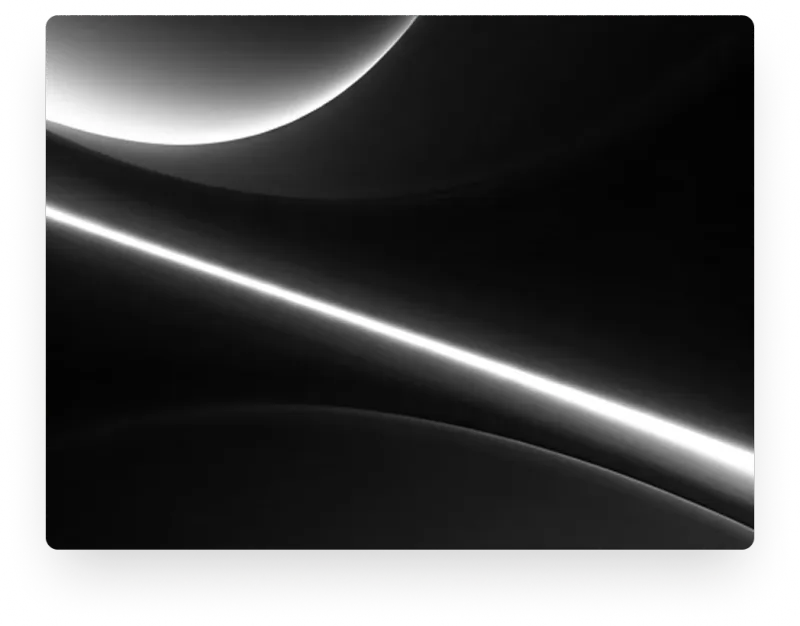

Elevate Your Digital Presence
We craft data-driven digital experiences that drive growth and maximize ROI for
visionary brands.

Our Services
SEO Strategy
Focus on organic growth and
search visibility to dominate your
market with precision engineering.
Web Development
High-performance, responsive
websites engineered for conversion
and flawless user experiences.
Digital Marketing
Comprehensive campaigns across
social and search to maximize ROI
and elevate brand positioning.